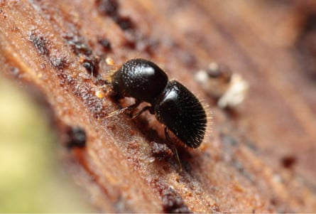

The chief scientist of the Botanic Gardens of Sydney is warning of an imminent and deadly risk to the city’s trees posed by an invasive beetle that has led to the removal of thousands of trees in Perth.
The tiny polyphagous shot-hole borer, which is native to south-east Asia, is a “fungus farmer” that burrows into trees and can spread a fungus that kills the host tree.
The larvae of the beetle feed on the fungus, which then colonises the tree’s water and nutrient conducting vessels and blocks them, causing stress and dieback that can eventually lead to the tree’s death.
A polyphagous shot-hole borer.Photograph: Karl Magnacca/iNaturalist
The beetle was first detected in a tree in Perth in 2021 and a year later had spread to more than 200 locations across the Western Australian capital. About 4,000 trees, including Moreton Bay and Port Jackson figs – which are not native to WA – have been cut down in attempts to eradicate the beetle.
The beetle can’t establish the fungus in all tree species and it is not known how many types of trees in Australia – native and introduced – could become targets. Overseas, more than 400 host species have been recorded.
The Western Australian government has its own list of species found to be susceptible.
The WA government announced last month that a national management group made up of state, territory and federal representatives had determined it was no longer feasible to try to eradicate the invasive pest and control strategies would shift to managing it.
‘Concern is now heightened’
The chief scientist at Sydney’s botanic gardens, Brett Summerell, said they had been preparing for the beetle to make its way to eastern Australia, where it could have a huge impact in places such as formal gardens.
“We’ve been concerned for the past couple of years, but that concern is now heightened because the potential for it to be accidentally brought into the Sydney region is quite significant,” he said.
Summerell said with the focus shifting from eradication to management in WA, it was “inevitable” that the beetle would spread further in Perth, and there would be increased opportunities for it to expand – likely via the transportation of infested wood such as firewood.
“I just see the opportunities for people to pick up infested wood and travel east, even all the way to the Sydney region. That risk is going to be heightened because we’re moving from eradication to management.”
He said because it was not known how many tree species were susceptible, “it’s just a big experiment about to happen”.
In Sydney there are large populations of known hosts such as plane and fig trees meaning there was the potential for large numbers to be severely affected, Summerell said.
Shot-hole borers could affect the heritage values and appearance of popular parks and gardens – and the amenity trees provide through natural urban cooling.
‘One of the highest priorities should be to contain it’
The policy director at the Invasive Species Council, Carol Booth, said it was critical that governments fund research to investigate more control options, including collaboration with overseas researchers.
“One of the highest priorities should be to contain it for as long as possible to give us the time to develop more effective control methods,” she said.
The council wants to see more work to investigate the potential impacts of the shot-hole borer in Australia and which native species might be susceptible.
“The big unknown is what is going to be the environmental impact,” she said. “What the impact is going to be overall in forests. It’s really uncertain.”
Signs of polyphagous shot-hole borer infestation included tiny entry and exit holes – about the size of the tip of a ballpoint pen – in a tree’s bark and wilting and dieback of branches, often starting in the upper canopy.
Summerell said monitoring for the presence of the beetle was critical, as was educating the public to identify the signs of a potential infestation, which could start in a back yard tree.
“The more sets of eyes we have looking for potential problems, the more likely we are to find it early,” he said. “If there are little holes and dots in the trees where it’s obvious a borer has been … they should report that .”